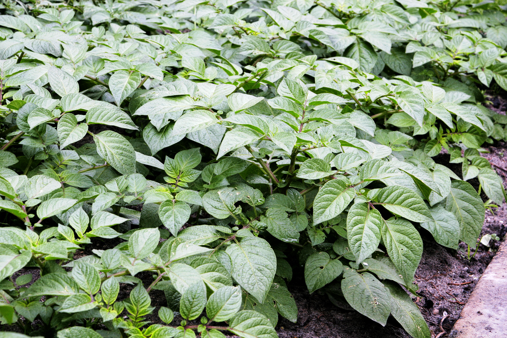

Potato growth can be divided into five phases. During the first phase, sprouts emerge from the seed potatoes and root growth begins. During the second, photosynthesis begins as the plant develops leaves and branches above-ground and stolons develop from lower leaf axilson the below-ground stem. In the third phase the tips of the stolons swell, forming new tubers, and the shoots continue to grow, with flowers typically developing soon after. Tuber bulking occurs during the fourth phase, when the plant begins investing the majority of its resources in its newly formed tubers. At this phase, several factors are critical to a good yield: optimal soil moisture and temperature, soil nutrient availability and balance, and resistance to pest attacks. The fifth phase is the maturation of the tubers: the leaves and stems senesce and the tuber skins harden.
New tubers may start growing at the surface of the soil. Since exposure to light leads to an undesirable greening of the skins and the development of solanine as a protection from the sun's rays, growers cover surface tubers. Commercial growers cover them by piling additional soil around the base of the plant as it grows (called "hilling" up, or in British English "earthing up"). An alternative method, used by home gardeners and smaller-scale growers, involves covering the growing area with mulches such as straw or plastic sheets.
At farm scale, potatoes require a well-drained neutral or mildly acidic soil (pH 6 or 7) such as a sandy loam. The soil is prepared using deep tillage, for example with a chisel plow or ripper. In areas where irrigation is needed, the field is leveled using a landplane so that water can be supplied evenly. Manure can be added after initial irrigation; the soil is then broken up with a disc harrow. The potatoes are planted using a potato planter machine in rows 80 centimetres (31 in) apart. At garden scale, potatoes are planted in trenches or individual holes some 15 centimetres (5.9 in) deep in soil, preferably with additional organic matter such as garden compost or manure. Alternatively, they can be planted in containers or bags filled with a free-draining compost. Potatoes are sensitive to heavy frosts, which damage them in the ground or when stored.
